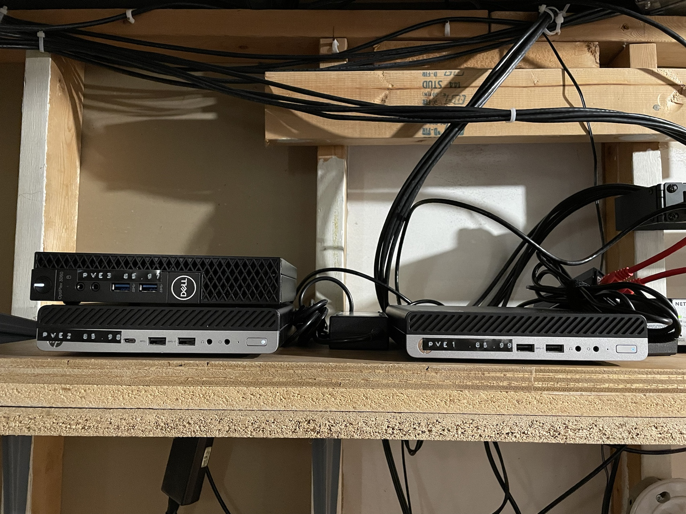

Introduction
In part 1 of this series I laid out the rationale for building a homelab cluster, walked through my hardware selection, and ran through the proxmox installer. In this post I’ll document the further configuration of the cluster and its nodes. The actual implementation will be done in ansible and tracked in my recipes repository, so I will keep it light on code in this post. What I’m going to try and document here is the steps I took, why I took them, and any weird edge cases or other fun learning opportunities I encounter in the process.
The goals for this post
By the end of this post I’d like to have accomplished the following things with my cluster:
- Set up their entries in ansible and be able to connect to each node individually or address them as a group
- Turn off the enterprise repository and add the non-enterprise one
- Make each node aware of my UPS state (one directly and the other two as clients)
- Set up email alerting
- Configure locale settings
- Set up my NAS as a storage target
What I’m working on
Just for kicks, let’s include an actual picture of these nodes I’m working on in this post:

Here they are, sitting in my utility room near the rest of my gear. So cute!
The code
The playbook I built for this is available here. That link points to the main playbook, and the repository more generally has the custom roles and other configs I made to get everything set up.
Ansible connectivity
I haven’t set up these hosts to use key based authentication yet, and decided to just try password auth. I ended up getting some host key errors, which I didn’t quite understand. At first I thought it was something with the devcontainer config I was using, but I tried the same thing on the host system and got the same error. After that I realized it was because I’d reinstalled that host and the key I had saved in ~/.ssh/known_hosts was from the old install. After clearing out that record I was able to ssh to all three hosts from my main system. I then had to refresh the devcontainer so it would copy in an updated copy of my ~/.ssh/known_hosts file. I’m not sure how frequently devcontainers normally refresh that, but it’s a config alignment issue I’ll have to keep in mind for future problems. Anyway, beside that little known hosts config issue, adding all three hosts and addressing them in the pve group all worked fine.
Set up the non-subscription repository
Proxmox has two repositories for package updates, one for Enterprise subscribers, and one for non-subscribers. By default it comes with the enterprise repository enabled, but since I’m not a subscriber I want to switch repos. Ansible comes with a built in apt repository module so that was an easy way to ensure the enterprise repo was absent from my sources list and that all the recommended ones (including for CEPH) were included. I set that role to also update my repository list and upgrade all installed packages for good measure as well using the apt module.
Set up UPS state alerting
Failed first attempt
I made a good amount of progress trying to set this up a certain way, but eventually hit a wall. Some of what I tried originally is still interesting, it just didn’t work. The core issue is that I was dynamically identifying which host had the UPS attached to it based on the output of a locally run command on each host. This worked fine in terms of setting conditionals to only do server setup stuff on the node with the UPS attached, but ran into troubles configuring the clients. The clients need to know the hostname of the server, but I couldn’t figure out any way to dynamically identify that host in an ansible playbook. Registered variables from commands (what I was using to identify which host was connected to the UPS) are host variables only, so the other hosts didn’t have access to it. From the look of it you can’t really make a host variable a global variable based on a condition. There might be a way to concatenate all host variables in a way that would let me get <server host> + '' + '' == <server host> as the output for all hosts, but that felt pretty hacky. Based on this I’m just going to hard code which host is directly connected to the UPS and build my playbook from that.
Borked attempt write up
One node in my cluster is connected via USB to my UPS. In the event of a power failure I want it to be alerted via that USB connection, and then pass that alert on to the other nodes via NUT. I’m largely relying on the Arch wiki to set this up, even though proxmox is Debian based, just because that wiki is amazing. I also found this repository which has a role configured for setting up nut. It’s set up in a different way than I want, and also has a lot more abstraction that’s good for portability but bad for interpretability, so I won’t use it directly.
The first thing I want to do is install the nut utility on all the systems, as with the previous section this is easily accomplished with the apt module in ansible.
Next I need to identify which system has the UPS USB cable connected to it, as this one will be the NUT server, and the others will be NUT clients. Realistically this is not going to change and I could just hard code it, but I thought it would be fun to figure out how to automate it.
The nut package comes with a nut-scanner utility which can be used to identify compatible devices. I can register the output of that command in ansible and then set a conditional to only perform certain operations if the output of the command listed a USB device. To test this before I actually applied anything with conditionals I used the debug module to output which host had the UPS attached. I won’t keep that debug in my final playbook, so I’ll reproduce that part here:
- name: Check if USB for UPS is connected to this host
ansible.builtin.shell: nut-scanner -U -P
register: ups_driver
- name: Show me which host has the UPS connected
ansible.builtin.debug:
msg: System {{ inventory_hostname }} has UPS driver {{ ups_driver }}
when: ups_driver.stdout.find('usbhid-ups') != -1Next is to configure the driver on connected system. To do this I copy over a ups.conf file based on the output of the nut-scanner command. After copying over the template I test it by sshing into the machine and running upsdrvctl start. Since that looked good I enable the nut-driver service with ansible’s systemd module.
After that it’s time to set up the nut server for clients (both the local machine and the other nodes in the cluster) to connect to. Following the Arch wiki I created a upsd.users file with user configuration for the clients and then tried to enable and start the nut server. I didn’t get an error from ansible for this, but when I tried to check the server I got nothing, and checking the state of the service I saw that it was dead. The relevant lines in the service status seemed to be:
upsd disabled, please adjust the configuration to your needs
Then set MODE to a suitable value in /etc/nut/nut.conf to enable itTaking a look at that file I see this:
##############################################################################
# The MODE determines which part of the NUT is to be started, and which
# configuration files must be modified.
#
# This file try to standardize the various files being found in the field, like
# /etc/default/nut on Debian based systems, /etc/sysconfig/ups on RedHat based
# systems, ... Distribution's init script should source this file to see which
# component(s) has to be started.
#
# The values of MODE can be:
# - none: NUT is not configured, or use the Integrated Power Management, or use
# some external system to startup NUT components. So nothing is to be started.
# - standalone: This mode address a local only configuration, with 1 UPS
# protecting the local system. This implies to start the 3 NUT layers (driver,
# upsd and upsmon) and the matching configuration files. This mode can also
# address UPS redundancy.
# - netserver: same as for the standalone configuration, but also need
# some more network access controls (firewall, tcp-wrappers) and possibly a
# specific LISTEN directive in upsd.conf.
# Since this MODE is opened to the network, a special care should be applied
# to security concerns.
# - netclient: this mode only requires upsmon.
#
# IMPORTANT NOTE:
# This file is intended to be sourced by shell scripts.
# You MUST NOT use spaces around the equal sign!
MODE=noneSo based on this I think I need ansible to remove the MODE=none line and change it to MODE=netserver on the server. Probably it will have to be MODE=netclient on the clients, but let’s leave that alone for now. I can handle this using the lineinfile module. After doing this and restarting the nut-server service I ran upsc pveups and had the state of the UPS returned, indicating the config was good for the directly connected node. This is where I got stuck, see the write up above
Working second attempt
Don’t reinvent the wheel folks. I vendored in this role and got everything working pretty much right away. I did have to hard code which host was attached to the UPS, but that’s a small price to pay. Problem solved!
Setup email alerting
The next thing I want is to set up an outbound email configuration, so I can receive email alerts for things like backups or drive issues. The general idea for configuring this comes from Techno Tim. I’m learning my lesson from NUT and not trying to roll my own ansible role, instead I’m using this role I found on GitHub.
I set up the playbook to run, ansible indicated it had made some changes, so I tried sending an email from the command line with
echo "This is a test message sent from postfix on my Proxmox Server" | mail -s "Test Email from Proxmox" <my.email@address.com>But nothing went out. Ok, time to troubleshoot.
Check if postfix service is up with
systemctl status postfix. It looks fineCheck if I have a correct looking config in
/etc/postfix/sasl_passwd. I do and there’s thesasl_passwd.dbfile in that folder as well that I’d expectCheck
/etc/postfix/main.cf. Config looks okCheck
/var/log/mail.log. Pertinent error seems to be around this:status=bounced (host smtp.gmx.com[212.227.17.184] said: 550-Requested action not taken: mailbox unavailable 550 invalid DNS MX or A/AAAA resource record (in reply to MAIL FROM command))Figure I probably set up
postfix_aliaseswrong in the role variables, so change that and try again. Slightly different errorstatus=bounced (host smtp.gmx.com[212.227.17.174] said: 550-Requested action not taken: mailbox unavailable 550 Sender address is not allowed. (in reply to MAIL FROM command))Realize that I was using
postfix_aliasesthe way I should have been usingpostfix_sender_canonical_maps. Redo that part.
Email sent! Right now they all show up as just coming from root. Per the Techno Tim docs linked above I know there’s a way to make that a more informative name. This would work, but I’d like it to say which host it’s actually coming from.
I took a guess from the Techno Tim post and figured the config I needed to change in the playbook would be postfix_header_checks and after poking around in the related jinja templates and looking at what the Techno Tim post said to write I got a config together that at least didn’t blow up. Sent a test email again and:
status=bounced (host smtp.gmx.com[212.227.17.184] said: 554-Transaction failed 554-Reject due to policy restrictions. 554 For explanation visit https://postmaster.gmx.net/en/error-messages?ip=24.64.146.237&c=hi (in reply to end of DATA command))Ok, this isn’t a critical feature, but I can handle hacking at it for a bit before I give up.
- Compare what’s in my
/etc/postfix/header_checksto what the guide showed: It looks mostly the same, although I’ve got.s in my name since I used the{{ ansible_hostname }}variable to define it. Maybe that’s it? Nope. Same error. - Techno Tim blog installed
postfix-pcreto enable this. Playbook didn’t by default. Add that to thepostfix_installvar and try again: Still bounced. - Notice that in the Techno Tim post he didn’t bother including a real email in the replacement line because it wasn’t supposed to matter. Maybe GMX actually cares ( his example had been for gmail). Update the variable so it keeps my real email for that part and just changes the name: It works!
Configure locale settings
Around this time I noticed I was getting some error messages when I would connect to a shell on the nodes: perl: warning: Please check that your locale settings:. I already had a role created to set up locales for previously configured hosts, so this was an easy fix, I just had to add it to the playbook for these hosts. Not much to say about this, just noting it here for completeness.
Conclusion
In this post I covered a bunch of configuration I wanted to have in place on my proxmox nodes before I got into the business of actually deploying anything. Stay tuned for my next post in this series where maybe I’ll actually use the cluster for what it was intended for and spin up some VMs.